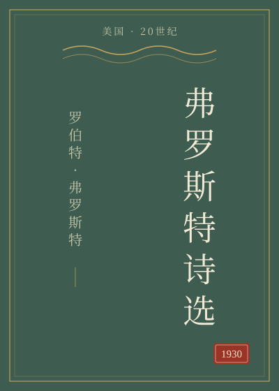
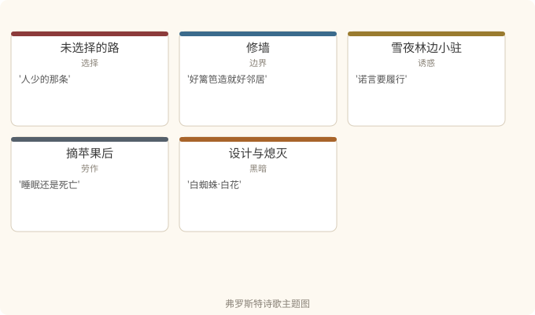

弗罗斯特诗选
一、基本信息
| 作者 | 弗罗斯特 |
|---|---|
| 成书/出版 | 诗作于1913—1962年间；四次普利策奖（Britannica） Robert Frost — Encyclopaedia Britannica（百科全书） |
| 国别/地区 | 美国 |
| 时代 | 现当代 · 20世纪 |
| 体裁 | 诗选集 |
| 语言 | 英语 |

弗罗斯特诗歌主题图（主题·结构图）
二、创作背景
Britannica（Frost 条）：四次普利策奖（1924/1931/1937/1943）、1958—59年国会图书馆诗歌顾问、1961年肯尼迪就职典礼朗诵'The Gift Outright'（Britannica：recited 'The Gift Outright' at JFK's 1961 inauguration）。
名诗（Britannica）：'The Road Not Taken,' 'Mending Wall,' 'Stopping by Woods on a Snowy Evening,' 'After Apple-Picking'（Britannica 列举）。
三、内容脉络
《未选择的路》：'两条路在林中分岔……我选了人少的那条，而这决定了一切'（原文意，公有领域）——美国最著名的'选择'诗（通说待核：诗本身讽刺'事后叙事'）。
《修墙》：'好篱笆造就好邻居'——与邻居每年修墙——wall 的意义之辩（原文意，公有领域）。
《雪夜林边小驻》：'树林又暗又深，但我有诺言要履行，还要赶路才能入睡'（原文意，公有领域）——责任与诱惑。
《摘苹果后》：'我在摘苹果后……困意袭来'——存在之问（通说）。
四、主要人物表
| 人物 | 身份 | 说明 |
|---|---|---|
| '我'（农夫诗人） | 新英格兰农夫 | '朴素而深'——'以诗的语言说日常'（通说） |
| 邻居 | 老农 | '好篱笆造就好邻居'的引语者 |
五、主题与艺术特点
- 选择与命运：'两条路'——选择的不可逆（通说）。
- 自然与人的边界：墙/林/雪——新英格兰的景观（通说）。
- 黑暗与死亡：'Stopping by Woods'——'安眠'与'诺言'的张力（通说）。
- 艺术特点：素体诗与格律并行（'playing solos'——通说待核）、口语与隐喻的平衡（Britannica：Robert Frost？test 简要——B154 详细）。
六、影响与评论
- Britannica（Frost 条）：四次普利策奖；JFK 就职朗诵；'The Road Not Taken' 'Mending Wall' 'Stopping by Woods'（Britannica 列举）。
Robert Frost — Encyclopaedia Britannica（百科全书） - 美国诗歌的'普通话'（通说待核）。
Robert Frost — Encyclopaedia Britannica（百科全书） - 中译：飞白/方平等译本（通说待核）。
Robert Frost — Encyclopaedia Britannica（百科全书）
七、阅读建议
难点
- '简单'是假象——Frost 自称'以混乱开始于明智而终于愚昧的牺牲'（通说待核）。
- 'The Road Not Taken'的误读史（'独立精神'vs 讽刺——通说待核）。
- 《弗罗斯特诗选》（人民文学出版社/湖南文艺，通说待核）。
- 英文本：The Poetry of Robert Frost（Edward Connery Lathem 编——通说待核）。
先读《未选择的路》《修墙》《雪夜林边小驻》→ 《摘苹果后》《设计》→ 编年读。
八、待核实
- 选本篇目因版本而异（通说待核）。
- 中译本信息待核。
- 'The Road Not Taken'误读研究（David Orr 同名书——通说待核）待核。
- 四次普利策奖细节（Britannica：four times 1924, 1931, 1937, 1943）待核。